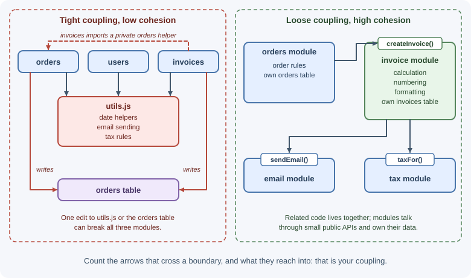
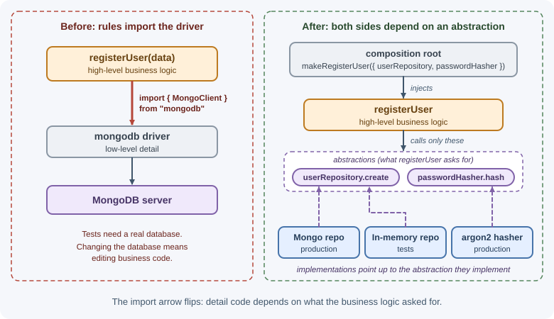

Design Principles¶
Design principles are guidelines for structuring code so it stays easy to understand, test, and change. They are not laws: each one addresses a particular kind of pain, and applying one blindly can create a different pain. This page explains the principles backend developers rely on most, with JavaScript examples, and when each one stops helping.
Why it matters¶
Most of a backend's cost comes after the first release, when features are added and bugs fixed. Code that mixes concerns, depends on everything, or hides surprises makes every change slow and risky. These principles are the vocabulary teams use in code reviews and design discussions—"this function has two reasons to change," "this module is too coupled to the database"—and they underpin architecture styles such as hexagonal and clean architecture.
Real-world usage¶
- Google — YAGNI and KISS in code review. Google's published code review guide asks reviewers to be "especially vigilant about over-engineering" and to encourage developers to solve the problem they know needs solving now, not one they speculate might arrive later (Google engineering practices).
- Shopify — low coupling enforced by a tool. Shopify's Packwerk checks two kinds of boundaries in its Rails codebase: dependency boundaries (an intentional, ideally small list of dependencies) and privacy boundaries (other code may use only a package's public API) (Shopify Engineering).
- Netflix — dependency inversion around data sources. Netflix's Studio Workflows team kept persistence details out of its business logic behind interfaces, which let it switch one data source from a JSON API to GraphQL within 2 hours (Netflix TechBlog).
Popular tools: linters with complexity rules (ESLint), dependency checkers such as dependency-cruiser, and TypeScript interfaces for narrow, explicit dependencies.
How it works¶
Separation of concerns¶
A concern is one aspect of the program: HTTP handling, validation, business rules, persistence, logging. Separation of concerns means each part of the code deals with one concern, so changing one aspect does not require touching unrelated code.
// Mixed concerns: HTTP, validation, business rules, and SQL in one place
app.post("/orders", async (req, res) => {
if (!req.body.items?.length) return res.status(400).send("No items");
const total = req.body.items.reduce((s, i) => s + i.price * i.qty, 0);
const discount = total > 100 ? total * 0.1 : 0;
await db.query("INSERT INTO orders ...", [total - discount]);
res.status(201).json({ total: total - discount });
});
// Separated: each piece has one concern
app.post("/orders", validate(orderSchema), async (req, res) => {
const order = await orderService.place(req.body); // business rules
res.status(201).json(order); // HTTP only
});
Cohesion and coupling¶
- Cohesion measures how closely the contents of a module belong
together. High cohesion: an
invoicemodule containing invoice calculation, numbering, and formatting. Low cohesion: autils.jswith date helpers, email sending, and tax rules. - Coupling measures how much one module depends on another. Low coupling: modules talk through small, stable interfaces. High coupling: one module reads another's internal data or database tables.
The goal is high cohesion, low coupling: related things together, unrelated things apart, connected through narrow interfaces.
| Kind of coupling (from worse to better) | Example |
|---|---|
| Shared mutable state / shared tables | Two modules write the same orders table |
| Depending on internals | Importing another module's private helper |
| Depending on a concrete implementation | new MongoOrderRepository() inside a service |
| Depending on an interface or message | Receiving a repository with save and findById |

SOLID¶
SOLID is a set of five object-oriented design principles collected by Robert C. Martin. They apply equally to modules and functions in JavaScript.
S — Single responsibility principle¶
Each software module should have one and only one reason to change. — Robert C. Martin
"Reason to change" means one source of change—often one group of people. Invoice calculation changes when finance changes tax rules; PDF layout changes when marketing changes branding. Keep them apart.
// Two reasons to change in one class
class InvoiceService {
calculateTotal(invoice) { /* tax rules: finance */ }
renderPdf(invoice) { /* layout and fonts: design */ }
emailToCustomer(invoice) { /* SMTP details: operations */ }
}
// One reason each
export const invoiceCalculator = { calculateTotal(invoice) { /* ... */ } };
export const invoicePdfRenderer = { render(invoice) { /* ... */ } };
export const invoiceMailer = { send(invoice, pdf) { /* ... */ } };
O — Open/closed principle¶
Software entities should be open for extension but closed for modification.
You should be able to add behavior without editing existing, tested code.
// Every new payment method edits this function
function charge(order, method) {
if (method === "card") { /* ... */ }
else if (method === "paypal") { /* ... */ }
else if (method === "upi") { /* ... */ } // and so on
}
// Extended by registering, not by modifying
const paymentHandlers = new Map([
["card", chargeCard],
["paypal", chargePaypal],
]);
export function registerPaymentMethod(name, handler) {
paymentHandlers.set(name, handler);
}
export function charge(order, method) {
const handler = paymentHandlers.get(method);
if (!handler) throw new Error(`Unsupported payment method: ${method}`);
return handler(order);
}
This is the strategy pattern. Apply open/closed where variation is expected; don't build extension points for variation that never comes.
L — Liskov substitution principle¶
Objects of a subtype must be usable wherever the base type is expected, without breaking correctness.
A subclass must honor the base type's contract: accept the same inputs, not throw new kinds of errors for valid calls, and keep its promises.
class FileStorage {
async read(key) { /* ... */ }
async write(key, data) { /* ... */ }
}
// Violation: callers that write through FileStorage now fail unexpectedly
class ReadOnlyArchiveStorage extends FileStorage {
async write() {
throw new Error("Archive is read-only");
}
}
The fix is a different abstraction: a ReadableStorage contract with only
read, and a WritableStorage with write, so read-only storage never
claims it can write.
I — Interface segregation principle¶
Clients should not be forced to depend on methods they do not use.
In JavaScript, apply it by asking for the narrowest dependency a function needs:
// Depends on a huge "userService" just to read an email address
async function sendReceipt(userService, order) {
const user = await userService.getById(order.userId);
// ...
}
// Depends only on what it uses: easier to test and reuse
async function sendReceipt({ findEmailByUserId }, order) {
const email = await findEmailByUserId(order.userId);
// ...
}
D — Dependency inversion principle¶
High-level modules should not depend on low-level modules; both should depend on abstractions.
Business logic (high level) should not import database drivers or SDKs (low level) directly. It declares what it needs, and the concrete implementation is supplied from outside—dependency injection.
// High-level code tied to a low-level detail
import { MongoClient } from "mongodb";
export async function registerUser(data) {
const db = (await MongoClient.connect(process.env.MONGODB_URI)).db();
await db.collection("users").insertOne(data);
}
// Depends on an abstraction supplied by the caller
export function makeRegisterUser({ userRepository, passwordHasher }) {
return async function registerUser({ email, password }) {
const passwordHash = await passwordHasher.hash(password);
return userRepository.create({ email, passwordHash });
};
}
Dependency inversion is the principle behind ports and adapters.

DRY — Don't repeat yourself¶
Every piece of knowledge must have a single, unambiguous, authoritative representation within a system. — The Pragmatic Programmer
DRY is about knowledge, not identical-looking lines. If the rule "orders over $100 ship free" exists in three places, one will eventually be updated and the others forgotten. Put it in one place.
But two pieces of code that look the same may represent different knowledge that will change for different reasons. Merging them creates a shared function that both callers keep modifying with flags and special cases—the wrong abstraction. As Sandi Metz put it, "duplication is far cheaper than the wrong abstraction."
A practical guideline is the rule of three: tolerate a second copy, and extract an abstraction when a third appears and you understand what really varies.
KISS — Keep it simple¶
Choose the simplest design that solves the actual problem. A plain function beats a class hierarchy; a single database beats a database plus a cache plus a queue if the load does not require them. Complexity must justify itself with a concrete benefit.
YAGNI — You aren't gonna need it¶
Do not build features, configuration options, or abstraction layers for requirements you merely imagine. Speculative generality costs effort now, adds code to maintain, and is often wrong when the real requirement arrives. YAGNI applies to features; it does not excuse skipping tests or refactoring that keeps code easy to change.
Composition over inheritance¶
Inheritance creates rigid "is-a" hierarchies where a change to a base class affects every subclass. Composition builds behavior from small parts that are combined.
// Inheritance: deep, rigid hierarchy
class Notifier { send() {} }
class EmailNotifier extends Notifier {}
class RetryingEmailNotifier extends EmailNotifier {}
class LoggingRetryingEmailNotifier extends RetryingEmailNotifier {} // explosion
// Composition: wrap behaviors around any notifier
const withRetry = (notifier, attempts = 3) => ({
async send(message) {
for (let i = 1; ; i++) {
try { return await notifier.send(message); }
catch (error) { if (i === attempts) throw error; }
}
},
});
const withLogging = (notifier, logger) => ({
async send(message) {
logger.info({ to: message.to }, "sending notification");
return notifier.send(message);
},
});
const notifier = withLogging(withRetry(emailNotifier), logger);
Law of Demeter (principle of least knowledge)¶
A function should talk to its immediate collaborators, not reach through them into their internals ("don't talk to strangers").
// Knows the whole object graph; breaks if any link changes or is null
const city = order.customer.profile.address.city;
// Ask the object that owns the knowledge
const city = order.shippingCity();
Long chains (a.b().c().d) are a signal of high coupling. Fluent builders
and plain data objects are reasonable exceptions.
Principle of least astonishment¶
Code and APIs should behave the way their names and conventions suggest.
- A function named
getUsershould not create a user when none exists. - A
GETendpoint should not change data. sort()mutating the array surprises people; document or avoid such side effects.- Consistent naming and error formats across an API reduce surprises.
Fail fast¶
Detect problems as early as possible and stop with a clear error, instead of continuing in a broken state and failing later in a confusing place.
// Fail fast at startup if configuration is missing
if (!process.env.DATABASE_URL) {
throw new Error("DATABASE_URL is required");
}
// Fail fast on invalid input at the boundary
export function createMoney(amountCents, currency) {
if (!Number.isInteger(amountCents)) throw new TypeError("amountCents must be an integer");
if (!/^[A-Z]{3}$/.test(currency)) throw new TypeError("currency must be an ISO code");
return Object.freeze({ amountCents, currency });
}
Failing fast is different from crashing on every error: operational errors such as a timeout are still handled gracefully. It means not hiding invalid state.
When to use and when not to use¶
Lean on these principles when:
- Code is long-lived, changed by several people, and covered by reviews.
- A change in one place keeps forcing changes elsewhere.
- Tests are slow or impossible because logic is tied to infrastructure.
Hold back when:
- The code is a short script, a spike, or a prototype you will discard.
- Adding an interface or class would serve a future you cannot name.
- Two pieces of code only look alike and change for different reasons.
| Principle | Apply when | Stop when |
|---|---|---|
| Single responsibility | One module changes for unrelated reasons | Splitting creates files that always change together |
| Open/closed | Variants are added regularly | Only one or two stable variants exist |
| Dependency inversion | Logic touches databases, SDKs, or networks | The dependency is a pure, stable utility |
| Interface segregation | Callers use a small part of a big object | The object is already small |
| DRY | The same business rule lives in several places | The code is similar but means different things |
| Composition over inheritance | Behaviors must combine freely | A shallow, stable hierarchy is clearer |
| YAGNI | A feature is only imagined | The work makes code easier to change (refactoring, tests) |
Practical examples¶
Refactoring a function with several principles¶
Before:
export async function checkout(req, res) {
const user = await db.collection("users").findOne({ _id: req.user.id });
let total = 0;
for (const item of req.body.items) total += item.price * item.qty;
if (user.tier === "gold") total *= 0.9;
else if (user.tier === "silver") total *= 0.95;
await stripe.charges.create({ amount: Math.round(total * 100), currency: "usd" });
await db.collection("orders").insertOne({ userId: user._id, total });
res.json({ total });
}
Problems: HTTP, pricing rules, payment, and persistence mixed (separation of concerns, SRP); discount tiers edited inline (open/closed); direct dependencies on the database and Stripe (dependency inversion); floating-point money.
After:
// pricing.js — pure business rules, one reason to change
const tierDiscounts = { gold: 0.1, silver: 0.05 };
export function priceOrder(items, tier) {
const subtotalCents = items.reduce((sum, i) => sum + i.unitPriceCents * i.qty, 0);
const discount = tierDiscounts[tier] ?? 0;
return Math.round(subtotalCents * (1 - discount));
}
// checkout.js — use case with injected dependencies
export function makeCheckout({ users, orders, payments }) {
return async function checkout({ userId, items }) {
const user = await users.findById(userId);
const totalCents = priceOrder(items, user.tier);
await payments.charge({ amountCents: totalCents, currency: "USD" });
return orders.create({ userId, totalCents });
};
}
// route — HTTP only
app.post("/checkout", async (req, res) => {
const order = await checkout({ userId: req.user.id, items: req.body.items });
res.status(201).json(order);
});
Best practices¶
- Optimize for code that is easy to change, not code that anticipates every change.
- Aim for high cohesion and low coupling at every level: functions, modules, services.
- Depend on narrow abstractions at boundaries with infrastructure.
- Remove duplicated knowledge; tolerate duplicated code until the right abstraction is clear.
- Prefer composition and small functions over deep inheritance.
- Name things so their behavior is unsurprising; avoid hidden side effects.
- Validate early and fail with clear messages.
- Treat principles as tools for discussing trade-offs, not rules to apply mechanically.
In production¶
- The same rule, three answers. Symptom: checkout, invoice, and email show different totals for one order. Detect: support tickets and reconciliation reports; searching the code finds the discount rule in several places. Cause: duplicated knowledge (a DRY violation). Fix: move the rule into one pricing module that everything calls.
- The wrong abstraction bites. Symptom: a fix for one feature breaks
another that shares a helper. Detect: the shared function has grown
boolean flags and
if (caller === ...)branches. Cause: code merged because it looked alike, not because it meant the same thing. Fix: inline the helper back into its callers, then extract only what is truly shared. - A GET request changes data. Symptom: records are deleted or emails sent when nobody pressed anything. Detect: the changes line up with crawler, link-preview, or prefetch user agents in access logs. Cause: a surprising side effect behind a safe method. Fix: make changes only through POST, PUT, PATCH, or DELETE.
- Long property chains crash. Symptom:
TypeError: Cannot read properties of undefinedfor some customers only. Detect: error tracking groups the crashes on one deep chain. Cause: code reaches through objects (a Law of Demeter violation) and one link is missing. Fix: ask the object that owns the data, and handle the missing case there. - Money off by a cent. Symptom: totals differ from the payment provider by small amounts. Detect: daily reconciliation mismatches. Cause: floating-point arithmetic on currency. Fix: integer minor units (cents) and one rounding rule, as in the refactored example above.
- Bad configuration found at 3 a.m. Symptom: a service starts fine but fails on the first request that needs a missing setting. Detect: errors appear only on one code path, long after deploy. Cause: configuration was read lazily. Fix: validate configuration at startup and refuse to start.
Important terminology¶
- Separation of concerns: Dividing code so each part handles one aspect of the program.
- Cohesion: How strongly the contents of a module belong together.
- Coupling: How much one module depends on another.
- SOLID: Single responsibility, open/closed, Liskov substitution, interface segregation, dependency inversion.
- Dependency injection: Supplying a component's dependencies from outside instead of creating them inside.
- DRY: Each piece of knowledge has one authoritative representation.
- Wrong abstraction: A shared abstraction that does not match how its callers actually vary.
- YAGNI: Don't build for requirements you don't have.
- Law of Demeter: Talk only to immediate collaborators.
- Fail fast: Detect and report invalid state immediately.
Common mistakes and misconceptions¶
- "DRY means no two lines may look alike." It concerns knowledge; premature merging creates the wrong abstraction.
- Applying SOLID by adding interfaces and classes everywhere, making simple code hard to follow.
- Using YAGNI to justify skipping tests or refactoring.
- "Single responsibility means one function per file" or "do one thing." It means one reason to change.
- Deep inheritance hierarchies for code reuse.
- Catching and ignoring errors in the name of robustness, which hides failures instead of failing fast.
Revision questions¶
- Explain cohesion and coupling with one good and one bad example each.
- What does "one reason to change" mean in the single responsibility principle?
- Show how the open/closed principle and the strategy pattern relate.
- Why is the wrong abstraction more costly than duplication?
- How does dependency inversion make code easier to test?
- Give an example of a Law of Demeter violation and how to fix it.